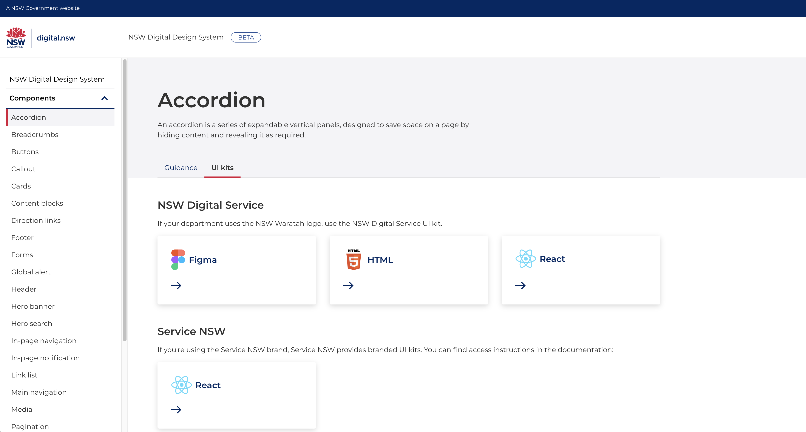

Digital Design System
Digital Service Toolkit
Our team
We're known for:
HTML component library
Figma wireframe kit
NSW Design Standards
Digital community
We also provide:
UX/CX guidance
React components
Dev starter kits
Solutions library
Session 1 of 2
Today:
Digital team managers
UXers
UI Designers
CDO's & Directors
Tomorrow:
Devs
DevOps
Tech leads
React Components Intro
- What is react?
- Scaled product team maturity
- Full-stack UX
- React in design
What is react?
React is a code framework for creating UI screens using components, which are pre-fabricated parts for your digital product.
Using components takes product design burden off UXers. With quality components, they can work with users and devs to create digital experiences more quickly.
Design components support designers, but in a scaled product practive they're used by the whole team.
We measure the practice maturity in Design-System powered teams in 4 stages:
A visual design system
- Image-based design
- Consistent branding
- Look & Feel
HTML & CSS examples
- Image-based design
- CSS is ready-made
- Development required
Isomorphic image & code
- Image-based design
- Same library
- Interpretation required
Full-stack UX system
- Design in (no)code
- Avoid design-drift
- UX focus
Full-stack UX
Design which focuses on user experience at every level of a product.
Levels that can impact users' experiences
- Whether they can reach their goal
- Visual Design
- UI Design
- Content Design
- Usability
- Accessibility
- Frontend code
- Backend code
- APIs
- Hosting
- Privacy
- Security
- Trust
No role is responsible for users' experiences
No designer should/could know all of these practices
Full-stack components let designers focus on user goals
Example: Asking for a user’s address
Traditional Design System
UI Design toolkit
- How the UI looks
- The code for a digital UI (HTML & CSS)
UI Dev toolkit
- The code for a view-layer component (Vue/React)
- The type-ahead mechanics (JS)
Full-stack Design System
Full-stack & DevOps toolkit
- API integration (JS)
- App boilerplate
- The API itself (NSW Point/AusPost/Google)
Design Guidance
- When it’s not ok to ask for an address
- What people expect when they can’t answer
React connects the layers of a component for the designer
React components are codier than HTML, so can connect the tech layers.
Design software lets designers arrange the right react components.
(without coding) (don't panic)
Instead of developers getting a flat image of how the final thing will look, and working backwards, designers can give them a schematic.
React-based design process
üí¨
Research
→
üë©üèΩ‚Äçüíª
Prototype
→
✅
Validate
→
üßëü誂Äçüîß
Plug it all in
→
üöÄ
SHIP IT!
Tools for designers

Zeplin

Framer

UXPin Merge


Figma & React-figma
We're still working this out
We've already got like-for-like with Figma, but image based
We're trialling UXPin Merge from 20th May
Re-cap
Quality
React helps extend the Design System's off-the-shelf quality from UI to UX
Efficiency
React components save on lots of dev work
Design drift
Designers using no-code versions of the same things creates a shared language
Early adopters
We need you
It's live now

digitalnsw.github.io/nsw-design-system-docs